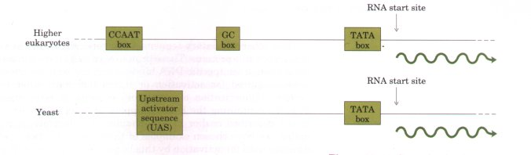
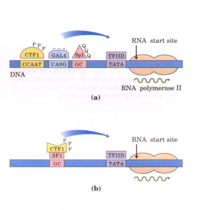

In eukaryotes, as in prokaryotes, the initiation of transcription is a major regulation point for gene expression. Prokaryotes and eukaryotes also use some of the same regulatory mechanisms. However, at least three general themes encountered in eukaryotic gene regulation tend to distinguish it from the prokaryotic gene regulation already described. First, the activation of transcription is associated with multiple changes in the structure of the chromatin in the transcribed region. Second, although both positive and negative regulatory elements are found, positive regulatory mechanisms predominate in systems characterized to date. A third significant distinction is the physical separation between transcription, which occurs in the nucleus, and translation, which occurs in the cytoplasm.
The complexity of many regulatory circuits in eukaryotic cells is extraordinary. We will end with a discussion of the elaborate regulatory cascade that controls development in fruit flies.
The effects of chromosome structure on gene regulation in eukaryotes have no clear parallel in prokaryotes. In chromosomal regions that have been activated for transcription, a variety of structural changes can be observed. The most obvious is an increased sensitivity of the DNA to nuclease-mediated degradation. When nucleases such as DNase are added to solutions of carefully isolated chromatin, they tend to cleave the DNA within the chromatin into fragments that have predictable sizes in multiples of about 200 base pairs, reflecting a regular repeating structure (the nucleosome; see Fig. 23-24). However, in actively transcribed regions, the fragments are smaller and more heterogeneous in size. Within these regions are sequences that have an especially high sensitivity to DNase I, referred to as hypersensitive sites. These are generally no more than 100 to 200 base pairs long and are often found within the 1,000 base pairs flanking the 5' ends of transcribed genes (in some genes, hypersensitive sites are found farther from the 5' end, near the 3' end, or even within the gene itself ). Many hypersensitive sites correspond to binding sites for known regulatory proteins. The relative absence of nucleosomes in these regions may facilitate binding of regulatory proteins.
The DNA in transcriptionally active chromatin also tends to be undermethylated. Methylation of cytosine residues at the 5' position is common in eukaryotic DNA at CpG sequences (p. 347). CpG sites near many genes are generally undermethylated in tissues where the genes are expressed relative to tissues where they are not expressed.
The final significant change observed during transcription is in the histones and related proteins. Transcriptionally active chromatin tends to be deficient in histone Hl, and the other core histones have a greater tendency to be modified by acetylation or by the attachment of ubiquitin (p. 936). In some cases, nucleosomes are absent in regions that are very active in transcription, such as the rRNA genes in many eukaryotic cells. The overall pattern suggests that active chromatin is prepared for transcription by the removal of potential structural barriers, but the molecular functions of all of the changes or the mechanisms by which they occur are not completely understood.
In general, eukaryotic RNA polymerases have little or no intrinsic af finity for their promoters. Initiation of transcription is almost always dependent on the action of one or, more often, several activator proteins. The extensive use of positive regulatory mechanisms is probably a consequence of the larger size of the eukaryotic genome. Negative regulatory elements appear to be less common, although many eukaryotic regulatory proteins can be either activators or repressors under some circumstances.
There are at least two possible reasons for the many examples of positive regulation. First, nonspecific DNA binding of regulatory proteins becomes a more important problem in the much larger genomes of higher eukaryotes. The chance that a specific binding sequence will occur randomly at an inappropriate site also increases with genome size. One way to improve specificity is to use multiple regulatory proteins. The probability of the random occurrence of appropriate binding sites for several different proteins in proper functional juxtaposition is negligible. Using several negative regulatory elements will generally not improve specificity, because binding of one is sufficient to adequately block RNA polymerase action. Specificity can be improved, however, if several positive regulatory proteins must each bind specific DNA sequences and then form a complex that activates transcription. The average number of regulatory sites for a gene in a multicellular organism is probably at least five. The second reason for the use of positive regulation in a large genome is simply that it is more efficient. If the 100,000 genes in the human genome were negatively regulated, each cell would have to synthesize 100,000 different repressors in sufficient concentration to permit specific binding of each. In positive regulation, most of the genes are normally inactive (i.e., RNA polymerases do not bind the promoters) and the cell only has to synthesize the selected group of activator proteins needed to activate transcription of the small subset of genes required in that cell.

Figure 27-33 Generalized eukaryotic promoters with some typical binding sites for regulatory proteins.
Eukaryotic cells have three different RNA polymerases (I, II, and III; p. 863) that are specific (to a first approximation) for different classes of RNA. Messenger RNAs are generally transcribed by RNA polymerase II. Two types of generalized RNA polymerase II promoters and regulatory regions for eukaryotic genes are diagrammed in Figure 27-33, to summarize some important regulatory sequence elements. The first of these regulatory elements is a TATA box (consensus sequence TATAAAA; see Fig. 25-7). TATA boxes are located 25 to 30 base pairs from the mRNA initiation site in higher eukaryotes, although the distance is much more variable in yeast. These sequences appear to be binding sites for a transcription factor called TFIID ("TF-two-D") that is required for RNA polymerase binding. Although TATA boxes are relatively common, many genes have been found that are expressed without TATA boxes. A variety of other short sequence elements that function in the regulation of a given promoter are often found within a few hundred base pairs of the transcription start site. 'Iwo examples common to many genes are GC boxes (consensus GGGCGG) and CCAAT boxes (consensus GCCAAT). Additional regulatory sequence elements with more complex sequence structures are called upstream activator sequences (UASs) in yeast and enhancers in higher eukaryotes. For enhancer (and UAS) sequences, the location and orientation of the sequences relative to the transcription start site are relatively unimportant; they exert their regulatory effects even when moved experimentally, and they may naturally occur thousands of base pairs away from the gene being regulated.
| Each of these sequence elements is
recognized and bound specifically by one or more
regulatory proteins (transcription factors). Regulation
involves protein-protein interactions between different
regulatory proteins bound at different sites and/or
between regulatory proteins and RNA polymerase. Because
the DNA sites bound by these proteins are often hundreds
or even thousands of base pairs away from each other or
from the transcription start site, the protein-protein
contact often requires DNA looping, as we have
encountered in the ara operon in bacteria (Fig. 27-20). A number of general transcription factors bind to RNA polymerase II and are required for recognition of the TATA box and initiation of transcription at most RNA polymerase II promoters. These are the transcription factors TFIIA, TFIIB, TFIID, TFIIE, and TFIIF. The first two proteins to bind in the initiation process are TFIIA and TFIID. As described above, TFIID is the protein that specifically recognizes the TATA box (Fig. 27-34). RNA polymerase II binds to the TFIIA-TFIID complex on the DNA, and the other transcription factors then bind to complete the complex. Except for TFIID, little is known about the detailed molecular functions of each of these transcription factors. |
 Figure 27-34 (a) Typical eukaryotic transcriptional activators that affect RNA polymerase II. TFIID is a general transcription factor. CTFI, GAL4, and Spl are transcriptional activators that bind to specific DNA sites. The nature of the activation domain is indicated by symbols: PPP, proline-rich; -- , acidic; QQQ, glutamine-rich. Some or all of these proteins may activate transcription via intermediary proteins called coactivators (not shown). Note that the binding sites illustrated here are not generally found together near a single gene. (b) A chimeric protein with the DNA-binding domain of Spl and the activation domain of CTFI activates transcription if a GC box is present. |
The other regulatory sequences are generally bound by transcriptional activator proteins. These proteins typically have a distinct structural domain for specific DNA binding and one or more additional domains required for activation or interaction with other regulatory proteins. Dimerization of regulatory proteins is often mediated by domains containing the leucine zippers or helix-loop-helix structural motifs described earlier in this chapter. To illustrate activation domains, we have chosen examples of three distinct types of structural domains used for activation by this large class of proteins (Fig. 27-34).
First, the factor that binds to the GC box in vertebrates is a protein called Spl (Mr 80,000). The DNA-binding domain of Spl is found near the carboxyl terminus and contains three zinc fingers. Two other domains in Spl function in activation. Their mechanism of action is unclear, but these domains are notable in that 25% of the amino acid residues are Gln. A wide variety of other known activator proteins also have glutamine-rich domains.
Second, the CCAAT box is bound by a specific class of proteins, one of which is called CTFI (Mr 55,000). The DNA-binding domain of CTFI contains many basic amino acid residues, and the binding region is probably arranged as an α helix. Apparently the protein has no helixturn-helix or zinc finger motif, and the DNA-binding mechanism remains to be clarified. The activation domain is proline-rich, with Pro residues accounting for more than 20% of the amino acid residues. Another protein that binds to the CCAAT box, known as C/EBP, has two activation domains; one is proline-rich and the other does not fall into the categories described here. C/EBP binds to DNA as a dimer, and it was the first protein found to dimerize by means of a leucine zipper.
A final example is the protein GAL4, which binds an upstream activator sequence called UASG near the genes for the enzymes of galactose metabolism in yeast. This protein contains several zinc fingers in its DNA-binding domain, near the carboxyl terminus. The activation domain is distinct in that it contains numerous acidic amino acid residues. Experiments substituting a variety of different peptide sequences for the acidic activation domain of GAL4 suggest that the acidic nature of this domain is critical, although its precise amino acid sequence can vary considerably. GAL4 binds to DNA as a dimer, although dimerization is mediated by a structural motif other than the leucine zipper or helix-loop-helix domains.
The distinct activation and DNA-binding domains of these regulatory proteins often act completely independently. The function of particular domains in transcriptional activator proteins has often been defmed in a type of experiment called "domain-swapping." For example, the proline-rich activation domain of CTFI can be joined (through genetic engineering; Chapter 28) to the DNA-binding domain of Spl to create a protein that binds to GC boxes and still activates transcription (Fig. 27-34b). The DNA-binding domain of GAL4 has similarly been replaced with the DNA-binding domain of the prokaryotic LexA repressor. This chimeric protein does not bind at UASG and does not activate the yeast gal genes, but it activates yeast transcription normally when the UASG, sequence in the DNA is replaced by the LexA recognition site. Similar experiments have helped to map the domains required for DNA binding and activation in many activator proteins.
The mechanism by which these activators affect transcription is not yet clear. Proteins such as GAL4 with acidic activation domains may interact directly with either RNA polymerase II or TFIID. Theactivators Spl and CTFI may act through additional bridging proteins called coactivators. The complexity of these interactions, the number of proteins involved, and the central role of these regalatory processes in the life of every eukaryote ensure that this will continue to be an area of vigorous inquiry.